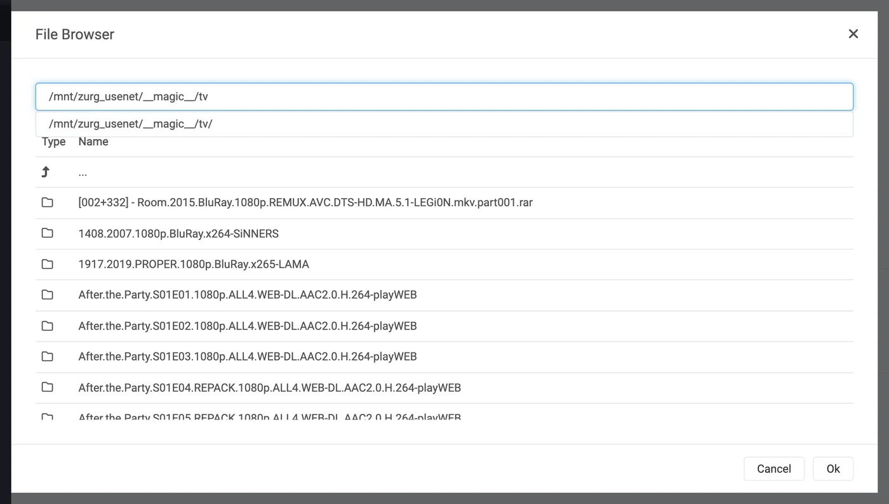
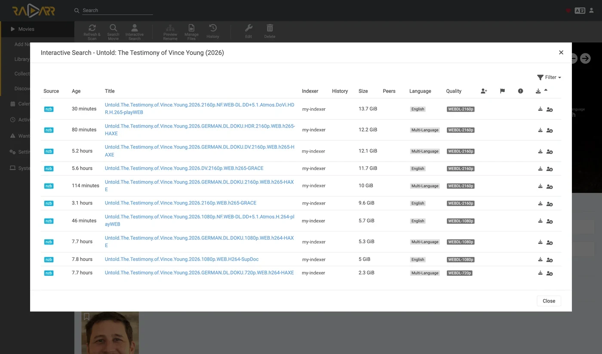

Sonarr und Radarr, Schritt für Schritt
Es gibt drei Wege, Sonarr und Radarr mit zurg zu nutzen. Entscheide, wer sucht: zurg oder die *arrs. Siehe welchen du nehmen solltest.
Die ersten beiden kannst du parallel betreiben. Sie teilen sich denselben __magic__-Ordner.
Richte Sonarr und Radarr auf zurg aus, damit sie ohne Client von Usenet holen. Bei einem Grab wird kein ganzes Video heruntergeladen oder entpackt. NZBs und Caches belegen weiterhin Speicherplatz. Diese Seite behandelt Usenet. Der Torrent-Endpunkt nutzt dieselben Clients und teilt sich den Ordner. Siehe Sonarr & Radarr für Torrents.
Alles unten wurde mit zurg nightly-993-g99bcf9a4, Sonarr 4.0.19.2979 und Radarr 6.3.0.10514 auf einer laufenden Installation mit einem echten Usenet-Konto aufgenommen. Host- und Benutzernamen wurden zu you@zurg-server geändert. Indexer-Namen lauten my-indexer. API-Keys und Bibliotheksanzahlen sind nur beispielhaft. Sonst wurde an der aufgenommenen Ausgabe nichts verändert. Die Log-Zeilen für torbox_nzb stammen aus dem Quellcode von zurg vom 2026-11-09 und wurden nicht live mitgeschnitten.
Bevor du anfängst
Drei Dinge müssen zutreffen. Prüfe alle drei jetzt, denn jedes davon schlägt später fehl, und zwar so, dass es nach etwas ganz anderem aussieht.
- zurg hat einen
nzb-Provider oder einentorbox_nzb-Provider (TorBox Pro). Ohne einen davon gibt es nichts, was lesen könnte, was der Endpunkt schreibt. Dann wird jeder Job nach 30 Minuten als Failed gemeldet, weil zurg dann aufgibt, darauf zu warten, dass er in der Bibliothek erscheint. Siehe Usenet oder TorBox-gehostetes Usenet fürtorbox_nzb. magic.enabledisttrue. Ohne das existiert das completed-Verzeichnis nicht, und jeder Import schlägt fehl. Siehe__magic__.- Der Mount ist für den *arr sichtbar, und zwar unter dem Pfad, den zurg meldet. Läuft Sonarr in einem Container, lies
Schritt 8 , bevor du irgendetwas konfigurierst. Als normale App auf derselben Maschine installiert sieht er den Mount dort, wo zurg ihn einhängt, mit einem Haken pro System:- Linux: Ein *arr, der als anderer Benutzer als zurg läuft, sieht einen leeren Ordner, bis
user_allow_otheraktiviert ist. Siehe Linux-Einrichtung. - macOS: Lass ihn als derselbe Benutzer laufen wie zurg. Der Mount liegt unter
/Volumes/Zurg, es sei denn, du hastmount_pathgeändert. - Windows: Lass Sonarr und Radarr als Tray-App laufen, die der Installer anbietet, nicht als Windows-Dienst. zurgs
Z:-Laufwerk gehört zu der Sitzung, in der du angemeldet bist, und ein Dienst läuft außerhalb davon. Deshalb sieht er das Laufwerk nicht. Siehe die Sitzungsregeln.
- Linux: Ein *arr, der als anderer Benutzer als zurg läuft, sieht einen leeren Ordner, bis
Prüfe die ersten beiden direkt in der Konfigurationsdatei im Arbeitsverzeichnis von zurg. Unter Windows öffne stattdessen config.yml in Notepad.
$ grep -A6 '^providers:' config.yml
providers:
- type: nzb
nntp:
host: news.example.com
port: 563
tls: true
username: <redacted>
password: <redacted>
$ grep -A4 '^magic:' config.yml
magic:
enabled: true
allow_delete: false
sidecar_max_mb: 32
sidecar_budget_mb: 2048allow_delete: false ist der sichere Standard und hat keinen Einfluss auf Importe. Ein Löschen innerhalb von __magic__ blendet den Eintrag nur aus, statt Inhalte aus dem Konto zu entfernen.
1. Den Endpoint einschalten
Zwei Wege, gleiches Ergebnis. Beide schreiben in config.yml, und beide brauchen einen Neustart: Die Routen, die __magic__ ausliefern, und der SABnzbd-Endpunkt werden nur einmal registriert, wenn zurg startet.
Option A — das Dashboard
Öffne das zurg-Dashboard, klicke auf Config und scrolle zu __magic__ & Download Clients. Aktiviere Serve __magic__ und SABnzbd Endpoint und setze dann SABnzbd Categories auf tv, movies.

Config ist der Ort, an dem die Einstellung liegt; Magic ist der Ort, an dem du später sehen wirst, wenn Grabs ankommen.

Lass SABnzbd Completed Directory leer, es sei denn, dein *arr bindet zurg an einem anderen Pfad ein als zurg selbst. Siehe dazu
Option B — config.yml
Füge den Block von Hand hinzu und starte zurg neu.
magic:
enabled: true
sabnzbd:
enabled: true
api_key: "" # empty = zurg generates one and keeps it
categories: [tv, movies]
complete_dir: "" # empty = <mount_path>/__magic__/__all__Die Kategorien sind keine Ordner. Sie führen alle zum selben Ort. Der Ordner eines Jobs ist der eigene Ordner des Releases unter __magic__/__all__. Die Liste gibt es nur, damit Sonarr und Radarr aufhören, vor einer Kategorie zu warnen, die sie nicht finden können. Wenn die Kategorie von Sonarr tv ist, muss tv in dieser Liste stehen.
Starte zurg neu und prüfe dann, ob der Provider übernommen wurde:

Eine Zeile mit nzb oder torbox_nzb reicht dem Endpunkt.
2. Den API-Schlüssel finden
Der API-Key ist die gesamte Authentifizierung für diesen Endpunkt. Trag ihn also einmal richtig ein und poste ihn nirgendwo öffentlich.
Wenn du api_key leer gelassen hast, hat zurg beim ersten Start einen erzeugt und in data/sabnzbd-apikey geschrieben:
$ cat data/sabnzbd-apikey
0123456789abcdef0123456789abcdef
Beispielschlüssel, deiner wird anders aussehen. Die Datei bleibt auch nach Neustarts erhalten, der Schlüssel bleibt also stabil, sobald er erzeugt wurde.
Wenn du api_key selbst gesetzt hast, steht er in config.yml und es wird keine Datei geschrieben. Das Dashboard zeigt dir, welcher der beiden Fälle zutrifft: Unten im Block bei Schritt 1 steht entweder pinned in config.yml under sabnzbd.api_key oder generated and kept in data/sabnzbd-apikey.
Dieser Endpunkt liegt außerhalb der Basic-Auth von zurg. Weder Sonarr noch Radarr senden jemals Basic-Auth an einen Download-Client, und deren HTTP-Schicht macht aus einem 401 ein "unable to connect" ohne brauchbare Information. Deshalb nimmt zurg /api bewusst aus. Der API-Key ist die einzige Sperre. Behandle den Port so wie den Rest von zurg: nur in einem vertrauenswürdigen Netzwerk betreiben oder hinter etwas, das ihn absichert.
3. Prüfen, ob er antwortet
Mach das, bevor du Sonarr anfasst. Das dauert zehn Sekunden und zeigt dir für den Rest der Einrichtung, ob zurg falsch ist oder der *arr.
$ SAB=0123456789abcdef0123456789abcdef
$ ZURG=192.168.88.245:9996
$ curl -s "http://$ZURG/api?mode=version&apikey=$SAB&output=json"
{"version":"4.5.1"}
$ curl -s "http://$ZURG/api?mode=get_config&apikey=$SAB&output=json" \
| jq '.config.misc.complete_dir, [.config.categories[].name]'
"/mnt/zurg_usenet/__magic__/__all__"
[ "*", "tv", "movies" ]In PowerShell. Tippe curl.exe ein, nicht curl: Das curl in Windows PowerShell ist ein anderer Befehl.
PS> $SAB = "0123456789abcdef0123456789abcdef"
PS> $ZURG = "192.168.88.245:9996"
PS> curl.exe -s "http://$ZURG/api?mode=version&apikey=$SAB&output=json"
{"version":"4.5.1"}
PS> (Invoke-RestMethod "http://$ZURG/api?mode=get_config&apikey=$SAB&output=json").config.misc.complete_dir
Z:/__magic__/__all__complete_dir ist der Pfad, den zurg an die Clients weitergibt. Prüf jetzt, ob es ein Pfad ist, den sie öffnen können.
Prüf dann, ob ein falscher Key tatsächlich abgelehnt wird (unter Windows mit curl.exe und denselben URLs):
$ curl -s "http://$ZURG/api?mode=queue&apikey=wrongkey&output=json"
{"status":false,"error":"API Key Incorrect"}
$ curl -s "http://$ZURG/api?mode=queue&output=json"
{"status":false,"error":"API Key Required"}mode=version ist kein Authentifizierungstest. Es antwortet {"version":"4.5.1"} auch mit einem falschen Key. So verhält sich das echte SABnzbd, und zurg kopiert das. Nimm mode=queue oder mode=get_config, wenn du tatsächlich den Key testen willst.
Beide URL-Varianten funktionieren, du kannst also im Feld URL Base des Clients jede der beiden eintragen:
Wenn /api ein einfaches 404 liefert, ist sabnzbd.enabled noch auf false oder zurg wurde nach der Änderung nicht neu gestartet.
4. Die Root-Ordner anlegen
Lege sie an, bevor du sie hinzufügst, denn der Dialog Add Root Folder in den *arrs durchsucht das laufende Dateisystem und bietet keinen Ordner an, der nicht existiert.
$ mkdir -p /mnt/zurg_usenet/__magic__/tv /mnt/zurg_usenet/__magic__/movies
$ ls -d /mnt/zurg_usenet/__magic__/tv /mnt/zurg_usenet/__magic__/movies
/mnt/zurg_usenet/__magic__/movies
/mnt/zurg_usenet/__magic__/tvPS> New-Item -ItemType Directory -Force Z:\__magic__\tv, Z:\__magic__\moviesOder erstelle die beiden Ordner im Explorer.
Ersetze /mnt/zurg_usenet durch deinen eigenen mount_path. Ist er nicht gesetzt, lautet er /mnt/zurg unter Linux, /Volumes/Zurg unter macOS und Z: unter Windows. Die Ordnernamen kannst du frei wählen; tv und movies passen nur zu den Kategorien.
Der Root-Ordner liegt neben dem completed-Verzeichnis, nicht darin und nicht darüber. zurg liefert den Clients __magic__/__all__, also deine Bibliothek so, wie __all__ sie auflistet. Deine Root-Ordner liegen daneben, unter __magic__/tv und __magic__/movies. Nicht __magic__/__all__, nicht __magic__ selbst und nicht /mnt/zurg_usenet. Beide Clients zeigen einen health check, wenn ein Root-Ordner das Ausgabeverzeichnis des Download-Clients ist, und Radarr zeigt außerdem einen, wenn ein Root-Ordner es enthält. Geschwister-Ordner lösen beides nicht aus, und ein manueller Import, der auf das completed-Verzeichnis zeigt, hat dann eine Release zum Ansehen statt deiner ganzen Bibliothek.
So sieht es aus, wenn man es falsch macht. Beide Beispiele sind echt, von den beiden Clients. Sie wurden aufgenommen, bevor das completed-Verzeichnis nach __magic__/__all__ verschoben wurde. Die Pfade darin liegen daher eine Ebene höher als deine, aber die beiden Regeln sind dieselben.

Sonarr mit dem completed-Verzeichnis selbst als Root-Ordner. Es warnt, weil der Root-Ordner das Ausgabeverzeichnis ist.

Radarr mit /mnt/zurg_usenet als Root-Ordner. Es warnt auch für den übergeordneten Ordner, Sonarr dagegen nicht. Verschiebe den Root-Ordner neben das completed-Verzeichnis, dann verschwinden beide Warnungen.
5. Den Client in Sonarr hinzufügen
Eine brandneue Sonarr blockiert alles hinter einem First-Run-Bildschirm. Wähle Forms (Login Page), lege einen Benutzernamen und ein Passwort fest und klicke auf Save.

Du kommst nicht weiter, bis Authentication Method auf etwas anderes als None gesetzt ist.

Nach Save wirst du einmal abgemeldet und landest auf der Login-Seite.

Settings → Download Clients
Gehe zu Settings → Download Clients. Bei einer frischen Installation gibt es hier nur die +-Karte.

Klicke auf das + unter „Download Clients“ – nicht auf das weiter unten unter „Remote Path Mappings“.
Wähle SABnzbd in der Spalte Usenet aus.

zurg tut sich speziell als SABnzbd aus, deshalb funktioniert nichts anderes in dieser Liste.
Der Dialog öffnet sich mit den eigenen Standardwerten von SABnzbd – localhost, Port 8080, kein Key.

Was in welches Feld gehört

Der gezeigte API-Schlüssel ist nur ein Beispiel — füge deinen eigenen ein.
In Docker lügen sowohl "localhost" als auch der Hostname. Innerhalb eines Containers ist localhost der Container selbst, und der eigene Hostname der Maschine wird meist zu 127.0.1.1 aufgelöst — das ist ebenfalls der Container. Verwende die LAN- oder Tailscale-IP des Hosts, niemals localhost und niemals den bloßen Hostnamen, selbst wenn beides in deiner Shell gut funktioniert.
Klicke auf Test. Ein grüner Haken bedeutet, dass alle vier Prüfungen des Clients bestanden wurden: Version, API-Schlüssel, globale Konfiguration und die Kategorie.

Klicke jetzt auf Save.

6. Den Root-Ordner in Sonarr hinzufügen
Geh zu Settings → Media Management und scrolle ganz nach unten.

Klick auf Add Root Folder. Es öffnet sich ein Dateibrowser auf dem Dateisystem von Sonarr. Bei Docker ist das das Dateisystem des Containers.

Tipp den Pfad in das Feld oben. Wenn der Mount für Sonarr wirklich sichtbar ist, erscheint beim Tippen der Inhalt von __magic__: __all__ mit allen Releases darin und alles, was du daneben angelegt hast. Das ist der schnellste Beweis, dass der Bind Mount stimmt.

Wenn hier nichts steht oder ein Fehler kommt, hör auf und behebe erst den Mount, bevor du weitermachst.

Vervollständige den Pfad zu __magic__/tv (Z:\__magic__\tv unter Windows) und klick auf Ok.

Zeigt Free Space eine plausible Zahl, kann Sonarr den Mount abfragen. Unmapped Folders zählt die Releases, die dort schon liegen.
7. Dasselbe in Radarr machen
Identisch, nur zwei Werte sind geändert: die Kategorie ist movies und der Root-Ordner ist __magic__/movies.

Radarrs erster Start läuft genauso: Forms auth einstellen, dann anmelden.

Settings → Download Clients → +, dann SABnzbd unter Usenet.

Gleicher Host, gleicher Port, gleicher Key. Nur Category ist anders: movies, nicht tv.

Test, grüner Haken, Save.

Dann Settings → Media Management → Root Folders → Add Root Folder und /mnt/zurg_usenet/__magic__/movies hinzufügen.
Ein zurg, zwei Clients, eine Queue. Die Queue und der Verlauf von zurg werden nur nach der Kategorie gefiltert, sonst nach nichts. Zwei Sonarrs, die beide tv verwenden, sehen sich gegenseitig die Jobs; Sonarr auf tv und Radarr auf movies tun das nicht. Wenn du pro Kategorie nur einen Client hast, kommt das gar nicht erst vor.
8. Wenn dein *arr in Docker läuft
Dieser Schritt gilt für Docker auf einem Linux-Host. Docker Desktop unter macOS und Windows führt Container in einer virtuellen Maschine aus. Der rslave-Bind unten setzt Linux-Mount-Propagation voraus (siehe Docker-Einrichtung). Ob zurgs Mount auf diesen Systemen an einen Container übergeben werden kann, wurde nicht getestet. Installiere Sonarr und Radarr unter macOS und Windows stattdessen als normale Apps, wie unter
Drei getrennte Probleme. Das zweite kostet bei jedem Import einen Download. Das dritte macht sich erst bemerkbar, wenn zurg zum ersten Mal neu startet.
Der Pfad, den zurg meldet, muss ein Pfad sein, den der Client öffnen kann
Falls der Container die Bibliothek an einem anderen Ort einbindet als zurg, schlagen alle Importe mit download doesn't contain intermediate path oder einem Health-Check für den Remote-Pfad fehl. Du kannst das auf eine von zwei Arten beheben, beide sind in Ordnung:
- Setze
sabnzbd.complete_dirauf den Pfad, den der Client sieht. Das ist am einfachsten, wenn es nur einen Client gibt oder mehrere Clients die Bibliothek am selben Ort einbinden. - Füge ein Remote Path Mapping im *arr hinzu. Nimm das, wenn verschiedene Clients die Bibliothek unterschiedlich einbinden.
sabnzbd:
complete_dir: "/data/zurg/__magic__/__all__" # what the *arr sees, not what zurg seesFür die zweite Variante gehst du zu Settings → Download Clients und klickst auf das + unter Remote Path Mappings. Das ist das untere auf der Seite, nicht das, das du in Schritt 5 benutzt hast.

Host muss genau dem Host-String entsprechen, den du im Download Client eingegeben hast. Remote Path ist der Pfad, den zurg meldet, Local Path ist der Ort, an dem der Client ihn sieht.
Ein Volume für den Download-Ordner und die Root-Ordner
Ein Import aus __magic__/__all__ nach __magic__/tv ist kostenlos, weil es nur ein Umbenennen ist. Ein Umbenennen funktioniert nur innerhalb eines einzigen Mounts. Gibst du dem Container die beiden Ordner als zwei Volumes, sieht er zwei Dateisysteme. Dass beide darunter auf demselben zurg-Mount liegen, hilft trotzdem nicht.
volumes: # do not do this
- /mnt/zurg_usenet/__magic__/__all__:/downloads
- /mnt/zurg_usenet/__magic__/tv:/tvDer Kernel verweigert das Umbenennen im Container. Sonarr und Radarr kopieren dann die Datei und löschen das Original, ohne Bescheid zu sagen. Jeder Import lädt dann das komplette Release aus deinem Account und schreibt es auf zurgs Speicher. Der Import klappt trotzdem. Er ist nur langsam. Eine 1.46 GB große Episode hat so 50 Sekunden und 2.9 GB Traffic gebraucht. Mit einem Volume waren es eine Sekunde und gar nichts gelesen.
Gib dem Container ein einziges Volume, das zurgs gesamten Mount enthält. Greife über dieses Volume auf den Download-Ordner und die Root-Ordner zu. Der Bind im nächsten Abschnitt macht genau das. Ein remote path mapping oder complete_dir zeigt den Client dann auf __all__ innerhalb desselben Volumes.
Ein manueller Import mit Hardlink/Copy Files kopiert ebenfalls. Wähle Move Files.
Den Parent des Mounts binden, nicht den Mountpoint
Das ist der Punkt, der dich einen ganzen Nachmittag kostet. Außerdem ist es das einzige Volume, das der Abschnitt oben verlangt. Ein Neustart von zurg hängt /mnt/zurg_usenet aus und mountet es wieder. Ein Container, der den Mountpoint selbst eingebunden hat, behält die FUSE-Verbindung, mit der er gestartet wurde, und die ist jetzt tot. Jeder Lesezugriff liefert dann Socket not connected. Und weil beide Clients vor einem Grab den freien Speicher im Root-Ordner prüfen, werden alle Releases stillschweigend abgelehnt:
FreeSpaceSpecification: Socket not connectedKeiner der beiden Clients meldet, dass der Mount veraltet ist. Der Ordner ist im Container weiterhin sichtbar, und ein interaktiver Grab, den du direkt an den Client schickst, funktioniert trotzdem. Das sieht dann so aus, als hätte ein *arr still und heimlich aufgehört zu suchen.
Bind stattdessen das übergeordnete Verzeichnis mit rslave ein. Dann kommt der Remount als Sub-Mount-Ereignis an, und der Container folgt ihm:
volumes:
- type: bind
source: /mnt # the parent, not /mnt/zurg_usenet
target: /mnt
bind:
propagation: rslavePrüfe einen Container nach jedem zurg-Neustart. Du willst eine Größe sehen, keinen Fehler:
$ docker exec radarr df -h /mnt/zurg_usenet
Filesystem Size Used Avail Use% Mounted on
zurg{PGSq4}: 1.0P 0 1.0P 0% /mnt/zurg_usenetDas Petabyte kommt daher, dass zurg ein virtuelles Dateisystem meldet und keine Festplatte. Das ist so gewollt, denn genau das erfüllt die Prüfung des freien Speichers beim *arr.
9. Einen Grab einmal durchlaufen sehen
Füg eine Sache hinzu, hol sie manuell und verfolge sie bis zum Schluss. Alles unten ist ein echter Abruf mit dem oben beschriebenen Setup.
Grab it
Öffne einen Film (oder eine Folge), klicke auf Interactive Search und wähle ein Release aus.

Die Spalte Source zeigt nzb an – das ist das Protokoll, das zurg verarbeiten kann.
Klicke auf den Button mit dem umkreisten Pfeil am Ende der Zeile, um es zu grabben. Wenn das Release nicht sauber passt, fragt der Client dich zuerst, ob die Zuordnung stimmt:

Override and Grab erscheint, wenn der Client von dir bestätigt haben möchte, worum es sich bei dem Release handelt. Prüfe die Zuordnung und klicke auf Grab Release. Bei einem normalen automatischen Grab wird dieser Dialog nie angezeigt.
Es landet in der Warteschlange

Activity → Queue direkt nach dem Grab. Achte auf den Fortschrittsbalken: Er ist voll, und Time Left zeigt einen Strich. Es gibt keinen Download, den man messen könnte, also ist ein Job entweder in der Warteschlange oder fertig, dazwischen gibt es nichts. Die anderen Zeilen hier gehören zu einer zweiten Radarr-Instanz, die auf dieselbe zurg und dieselbe Kategorie zeigt — siehe den Hinweis in Schritt 7.
zurg schreibt die NZB und liest sie
Aug 25 14:44:03 zurg-server zurg[3034965]: INFO nzb Loaded NZB
Last.Week.Tonight.with.John.Oliver.S13E22.480p.WEB.x264-RMTeam.nzb: 4 files
Aug 25 14:50:28 zurg-server zurg[3034965]: INFO nzb Loaded NZB
Untold.The.Testimony.of.Vince.Young.2026.1080p.NF.WEB-DL.DD+5.1.Atmos.H.264-playWEB.nzb: 9 filesLoaded NZB … : N files ist die Zeile, die sagt, dass die NZB geparst wurde. Wenn ein Job nach 30 Minuten als Failed gemeldet wird, weil zurg aufgibt, bis er in der Bibliothek erscheint, fehlt genau diese Zeile.
Der Import passiert

Activity → History. Zwei Ereignisse, nur Sekunden auseinander: Grabbed, dann Movie Imported.

Status: Downloaded, Size 4.7 GiB — und es wurde nichts heruntergeladen.
Prüfen, dass die Datei echt ist
Der Import hat die Datei in den Root-Ordner verschoben. Lies beide Enden davon und frag ffprobe, was es ist:
Wenn deine Shell ffprobe nicht findet, nimm ~/zurg/bin/ffprobe. Das Setup legt dort eine eigene Kopie ab, wenn keine installiert war.
$ ls -la "/mnt/zurg_usenet/__magic__/movies/Untold - The Testimony of Vince Young (2026)/"
-rw-r--r-- 1 you you 4920958828 Aug 25 14:53 Untold.The.Testimony…playWEB.mkv
$ dd if="$F" bs=1M count=1 >/dev/null
1048576 bytes (1.0 MB, 1.0 MiB) copied, 0.0429446 s, 24.4 MB/s
$ ffprobe -v error -show_entries format=duration,size,format_name \
-of default=noprint_wrappers=1 "$F"
format_name=matroska,webm
duration=4709.440000
size=4920958828In PowerShell, aus dem zurg-Ordner. Das Setup hat bin\ffprobe.exe dort abgelegt, es sei denn, ein ffprobe war schon in deinem PATH. In dem Fall tippst du stattdessen ffprobe:
PS> $F = Get-Item "Z:\__magic__\movies\Untold - The Testimony of Vince Young (2026)\*.mkv"
PS> $F.Length
4920958828
PS> bin\ffprobe.exe -v error -show_entries format=duration,size,format_name -of default=noprint_wrappers=1 $F.FullName
format_name=matroska,webm
duration=4709.440000
size=4920958828Ein 78 Minuten langes Matroska, das bei Bedarf aus Usenet-Artikeln gestreamt wird. Die Bytes kommen erst, wenn etwas sie liest, nicht wenn die *arr-Tools importieren.
10. Eine Veröffentlichung von Hand hinzufügen
Manchmal holt Sonarr oder Radarr die gewünschte Veröffentlichung nie. Die Indexer, die sie durchsuchen, haben sie vielleicht nicht, oder ein Qualitätsprofil oder ein Custom Format lehnt sie ab. Du kannst zurg die NZB selbst geben, und zwar unter der Kategorie der App, die sie importieren soll. Diese App importiert sie dann, als hätte sie sie selbst geholt.
Wenn die Veröffentlichung bei einem Indexer liegt, den die App durchsucht, probier zuerst die App. Interactive Search zeigt auch abgelehnte Veröffentlichungen. Wenn du eine davon holst, geht sie wie jeder andere Abruf an zurg. Radarr hat einen IMAX-Release geholt, den sein Profil abgelehnt hatte, weil er gegen ein erforderliches Custom Format 0 Punkte bekam, und hat ihn importiert.
$ SAB=0123456789abcdef0123456789abcdef
$ ZURG=192.168.88.245:9996
# an NZB file you already have (the upload field is called name, as in SABnzbd)
$ curl -s "http://$ZURG/api?mode=addfile&apikey=$SAB&cat=movies" \
-F 'name=@Movie.Title.2024.1080p.WEB-DL.nzb'
{"status":true,"nzo_ids":["SABnzbd_nzo_…"]}
# or a link to one, which zurg downloads itself
$ curl -s -G "http://$ZURG/api" \
--data-urlencode mode=addurl --data-urlencode "apikey=$SAB" --data-urlencode cat=movies \
--data-urlencode 'name=https://indexer.example/getnzb/<id>?r=<indexer-key>' \
--data-urlencode nzbname=Movie.Title.2024.1080p.WEB-DL
{"status":true,"nzo_ids":["SABnzbd_nzo_…"]}In PowerShell, mit curl.exe statt curl. Beide antworten mit {"status":true,"nzo_ids":[…]} wie oben.
$SAB = "0123456789abcdef0123456789abcdef"
$ZURG = "192.168.88.245:9996"
# an NZB file you already have (the upload field is called name, as in SABnzbd)
curl.exe -s "http://$ZURG/api?mode=addfile&apikey=$SAB&cat=movies" -F "name=@Movie.Title.2024.1080p.WEB-DL.nzb"
# or a link to one, which zurg downloads itself
curl.exe -s -G "http://$ZURG/api" `
--data-urlencode mode=addurl --data-urlencode "apikey=$SAB" --data-urlencode cat=movies `
--data-urlencode "name=https://indexer.example/getnzb/<id>?r=<indexer-key>" `
--data-urlencode nzbname=Movie.Title.2024.1080p.WEB-DL--data-urlencode sorgt dafür, dass das eigene ? und & des Links innerhalb von name erhalten bleiben. Der Job erscheint innerhalb einer Minute in der Queue der App, bei deren nächster Prüfung.
Fünf Dinge entscheiden, was danach passiert.
- Der Film oder die Serie muss schon in der App sein. Sie importiert nur, was sie einem Eintrag zuordnen kann, den sie verwaltet.
- Der Name muss sagen, was es ist. Der Job nimmt den Dateinamen der NZB oder
nzbname, wenn du es angibst. Ohnenzbnamenutztaddurlden Dateinamen, den der Indexer ausliefert. Gib dem Namen ein Jahr. - Die Kategorie bestimmt die App.
cat=movieserreicht den Radarr, dessen Download-Clientmoviesnutzt. Jede App schaut nur in ihre eigene Kategorie. - Das Qualitätsprofil blockiert es nicht. Die Datei, die du schon hast, kann es. Radarr prüft beim Import weder die erlaubten Qualitäten noch einen Mindestwert im Custom Format. Es hat eine 720p BluRay mit 0 Punkten in ein Profil importiert, das nur 2160p erlaubt und einen Wert von 100 verlangt. Außerdem hat es eine 1080p WEBRip in einen Film importiert, dessen Profil nur 720p erlaubt. Danach hat es eine 1080p BluRay als Upgrade darübergelegt und die WEBRip gelöscht. Eine danach hinzugefügte WEB-DL blieb in Activity mit Not an upgrade for existing movie file stehen. Activity → Queue → Manual Import bringt sie trotzdem rein und ersetzt die Datei.
- Einen Fehler musst du selbst beheben. Die App blockiert oder entfernt nie einen Download, den sie nicht selbst geholt hat. Eine Veröffentlichung, deren Artikel auf den News-Servern schon abgelaufen waren, kam von zurg als Failed zurück und blieb in Radarrs Queue mit Download has failed wasn't grabbed by Radarr, skipping automatic download handling stehen. Entferne sie aus der Queue und wähle eine andere Veröffentlichung.
Gemessen am 2026-10-10 mit Radarr 6.3, mit addfile und addurl, inklusive eines Profils, das ein Custom Format aus einem Release-Namen verlangt. Jeder Import war ein Umbenennen nach __magic__/movies, es wurde nichts kopiert. Sonarr wurde nicht getestet.
Danke an .telmen auf Discord, der gefragt hat, wie man das mit Usenet macht.
Vom zurg-Standpunkt aus schauen
zurgs /magic/-Seite listet jede NZB auf, die der Endpunkt jemals erhalten hat. Sonarr und Radarr entfernen die Jobs, die sie übernommen haben, und der Eintrag bleibt danach eine Woche lang erhalten. So liefert eine Abfrage, die zeitgleich mit einem Löschvorgang läuft, immer dieselbe Antwort. Einen Failed- oder Stuck-Job (länger als eine Stunde in der Warteschlange), den kein Client jemals entfernen wird, zum Beispiel nachdem du zurg nicht mehr als Download-Client nutzt, kannst du hier löschen, indem du seine Schaltfläche Clear gedrückt hältst. Beim Löschen wird auch die zugehörige NZB entfernt, sofern ein Import sie noch verwendet.

Placements sind Dateien, die die Clients verschoben haben. Tombstones sind die Job-Ordner, die sie danach gelöscht haben. Wenn ein Client kopiert statt zu verschieben, zeigt die Seite eine rote Tabelle Imports that were copies. zurg macht diese Kopien wieder zu Placements und löscht sie. Jede davon war aber trotzdem ein vollständiger Download, also korrigiere die Volumes.

State ist das Entscheidende. Queued heißt, zurg ist mit dem Release noch nicht fertig, sei es, weil die Bibliothek es noch nicht aufgelistet hat, die Dateigrößen sich noch nicht eingependelt haben oder die Artikel noch nicht geprüft wurden. Completed heißt, das Release ist bereit zum Import. Release nennt den Ordner, aus dem der Client importiert.
Die Spalte Release wird bei jeder Abfrage direkt aus der Bibliothek gelesen und nicht gespeichert. Benennst du das Release im zurg-Dashboard um, lässt eine Reparatur es neu aufbauen oder hängt zurg ein Suffix an, weil zwei Releases denselben Namen haben, folgt der Job dem Release.
Was funktioniert und was nicht
Funktioniert:
- Der Verbindungstest mit allen vier Prüfungen, in beiden Clients.
- Grabben, Warteschlange, Verlauf, Import per Umbenennen und die Bereinigung nach dem Import.
- Erneutes Grabben desselben Releases. Jeder spätere Grab bekommt eine eigene Job-ID, damit der Client darauf reagiert und nicht das Ergebnis des alten Jobs wiederverwendet. Das Release darunter bleibt dasselbe. Ein erneuter Grab eines Releases, das ein früherer Import schon geleert hat, wird als Failed gemeldet. Sein Ordner unter
__magic__/__all__hat nichts mehr zum Importieren, und Failed sorgt dafür, dass der Client es auf die Blockliste setzt und ein anderes holt. Der Grab, der den Ordner geleert hat, meldet weiterhin Completed, bis der Client ihn löscht. - Entfernen eines Jobs aus der Warteschlange, mit oder ohne Löschen der NZB.
mode=addurl, für einen Menschen oder eine Automatisierung, die eine URL statt eines Uploads übergibt. Keiner der *arr-Dienste nutzt das.
Funktioniert nicht:
- Kein Fortschritt. Ein Job ist entweder in der Warteschlange oder abgeschlossen; dazwischen gibt es keinen Prozentwert, weil kein Download stattfindet, den man messen könnte. Die Warteschlange zeigt die im NZB angegebene Größe an, damit die Zeile nicht leer bleibt.
- Keine Pause, kein Fortsetzen, kein Geschwindigkeitslimit, keine Priorität und kein Skript nach der Verarbeitung. SABnzbd hat all das, zurg hat aber nichts, worauf es das anwenden könnte.
del_filesbeim Löschen eines abgeschlossenen Jobs aus dem Verlauf wird ignoriert. (Bei einem Failed-Job löscht es die NZB, wenn daraus nichts importiert wurde.) Der Client meint damit „der Job-Ordner gehört wieder dir“, aber die gerade importierte Datei wird weiterhin aus dieser NZB ausgeliefert. Der Ordner, den der Client entfernen wollte, ist weg – das hat zurg selbst über das Mount erledigt.- Basic Auth kann diesen Endpunkt nicht schützen. Der API-Schlüssel ist die einzige Sperre.
Das Fehlersignal. Ein Release, in dem sich nichts importieren lässt, wird als Failed gemeldet, und beide Clients setzen es auf die Blockliste und holen eine Alternative. Dazu gehört ein Release, dessen Dateien alle kaputt, gelöscht oder herausgefiltert sind; eines, das nur .par2-, .sfv- und Begleitdateien enthält; eines, dessen Dateien alle in einem Format vorliegen, das nichts abspielt – so sieht ein verschleierter Post aus, der seinen RAR-Satz .z001….z133 nennt; und ein Archiv, das bereits geöffnet wurde und keine Mediendatei enthält. Ein RAR-Satz ist Inhalt, kein Beiwerk: zurg streamt das Video direkt daraus. Wenn ein Release wirklich etwas enthält, für das zurg keine Endung kennt, erweitere addl_playable_extensions, statt es auf die Blockliste zu setzen.
Die Artikel werden geprüft, bevor ein Job als fertig gemeldet wird. zurg wartet, bis die Bibliothek das Release auflistet und sich die Dateigrößen eingependelt haben. Dann fragt es die Newsserver nach Anfang und Ende jeder Inhaltsdatei. Das sind die ersten sechzehn Artikel und der letzte. Außerdem lädt es den ersten Artikel jeder Datei herunter. Das sind bis zu vierundsechzig davon plus ein paar weitere bei einem Release mit nur wenigen Dateien. Manche Newsserver melden weiterhin, dass ein Artikel existiert, obwohl sein Inhalt entfernt wurde, und das zeigt sich erst beim Herunterladen. Ein heruntergeladener Artikel zeigt außerdem, dass er zu diesem Post gehört und nicht zu einem anderen Upload. Der Job bleibt Queued, bis das geklärt ist. Schäden, die die Stichprobe nicht erreicht, werden hier nicht erkannt. Sie fallen beim Lesen auf, das sie erreicht. Ein Release, dessen Artikel fehlen, bekommt zuerst eine PAR2-Reparatur und wird nach der Reparatur erneut geprüft. Ist es wieder vollständig, läuft es weiter. Fehlen weiterhin Artikel oder kann nichts repariert werden, wird es als Failed gemeldet, mit einer Anzahl der fehlenden Teile. Das ist ein Download-Fehler, und genau darauf reagieren die Clients: Sie setzen das Release auf die Blockliste und holen unbeaufsichtigt eine Alternative, statt etwas zu importieren, das nicht abspielbar ist. Bei torbox_nzb gibt es keine Newsserver und keine Artikelprüfung; ein Grab gilt dort als geprüft, wenn TorBox ihn abgerufen hat.
Eine Prüfung, die nicht abgeschlossen werden kann, wartet nicht ewig. Manchmal lässt sich die Prüfung gar nicht vollständig durchführen. Der Verbindungspool ist eventuell down, das Konto gedrosselt oder der Durchlauf läuft in ein Zeitlimit. Das ist keine Antwort. Der Job bleibt Queued und wird eine Minute später erneut abgefragt. zurg zählt die Versuche pro Job mit, damit ein Neustart sie nicht vergisst. Nach dreißig fehlgeschlagenen Versuchen in Folge, die sich über mindestens drei Stunden erstrecken, wechselt der Job als Failed in den Verlauf. Die Meldung nennt die Anzahl, die Zeitspanne und den letzten Fehler. Ein Ausfall durch reine Ablehnungen erreicht die dreißig innerhalb einer Stunde und bringt die Warteschlange deshalb nicht zum Stillstand.
Ein Release, das die Bibliothek verlässt, lässt seinen Job fehlschlagen. Ein Release kann im Dashboard gelöscht werden, seine NZB kann aus dem Überwachungsordner entfernt werden oder von allen Konten fallen gelassen werden. Sein Job bleibt fünfzehn Minuten lang Queued und wechselt dann als Failed in den Verlauf. Der Client setzt es auf die Blockliste und holt ein anderes. Die Wartezeit ist wegen Neustarts da. Die Bibliothek listet während des Ladens jedes Release aus, und das darf nicht als Löschung gewertet werden. In den ersten fünfzehn Minuten nach dem Start von zurg schlägt deshalb aus diesem Grund nichts fehl. Ein Job, dessen Release die Bibliothek nie aufgelistet hat, ist davon nicht betroffen, weil es noch eintrifft.
Fehlerbehebung
Noch hängen? Frag im zurg-support-Forum auf Discord. Hilfe holen sagt dir, was du angeben solltest.